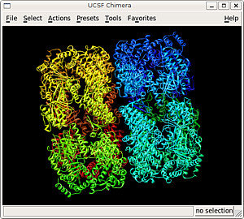
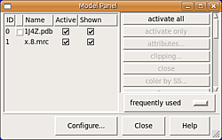

Chimera
Dieser Artikel wurde für die folgenden Ubuntu-Versionen getestet:
Ubuntu 16.04 Xenial Xerus
Zum Verständnis dieses Artikels sind folgende Seiten hilfreich:
Chimera  ist ein Molekülbetrachter, vergleichbar mit VMD und PyMOL, der an der University of California San Francisco in C++ und Python entwickelt wird. Das Programm kann sowohl atomare Modelle aus der Protein Data Bank (PDB) als auch Elektronendichtekarten (EDM) der Electron Microscopy Data Bank (EMDB) darstellen. Es beherrscht die üblichen Darstellungsmodi wie z. B. Comic, Atomar und Oberfläche. Tutorials und Bildmaterial werden in großem Umfang auf der Projektseite bereitgestellt.
ist ein Molekülbetrachter, vergleichbar mit VMD und PyMOL, der an der University of California San Francisco in C++ und Python entwickelt wird. Das Programm kann sowohl atomare Modelle aus der Protein Data Bank (PDB) als auch Elektronendichtekarten (EDM) der Electron Microscopy Data Bank (EMDB) darstellen. Es beherrscht die üblichen Darstellungsmodi wie z. B. Comic, Atomar und Oberfläche. Tutorials und Bildmaterial werden in großem Umfang auf der Projektseite bereitgestellt.
Chimera läuft unter den gängigen Betriebssystemen Linux, Windows und Mac OS X. In der Bedienung ist es intuitiver als VMD, allerdings gibt es die Software derzeit ausschließlich in englischer Sprache.
Für den nicht kommerziellen Einsatz ist das Programm kostenlos. Der kommerzielle Einsatz dagegen setzt eine gesonderte Lizenzvereinbarung voraus.
Voraussetzungen¶
Es wird ein Grafikkartentreiber vorausgesetzt, der die 3D-Beschleunigung für OpenGL unterstützt. Der steht für alle gängigen Grafikkarten unter Ubuntu zur Verfügung.
Installation¶

Chimera ist nicht in den offiziellen Paketquellen enthalten. Allerdings wird für 32- und 64-Bit-Systeme ein Installationsassistent auf der Downloadseite des Projekts  bereitgestellt, der im Terminal [1] ausgeführt wird.
bereitgestellt, der im Terminal [1] ausgeführt wird.
Hinweis!
Fremdsoftware kann das System gefährden.
Der Installationsassistent muss nach dem Herunterladen ausführbar [2] gemacht werden: [1]
chmod +x ./chimera-VERSIONSNUMMER-linux-ARCH.bin
Systemweite Installation¶
Wenn Chimera systemweit für alle Benutzer installiert werden soll, dann muss der Installationsassistent mit administrativen Rechten [3] gestartet werden: [1]
sudo ./chimera-VERSIONSNUMMER-linux-ARCH.bin
Während des Installationsvorgangs werden einige Konfigurationsmöglichkeiten angeboten (hier jeweils mit Standardkonfiguration):
Enter install location: /opt/UCFS/ChimeraARCH-VERSION
Die Standardkonfiguration des Installationsverzeichnisses ist empfehlenswert oder es sollte ebenfalls ein Verzeichnis in /opt sein - ⏎
Install desktop menu (icon has to be done by user)? yes
Installiert bei Bedarf den Programmstarter /usr/share/applications/UCSF-ChimeraARCH-VERSION.desktop für einen Menüeintrag und das Programmicon /usr/share/icons/hicolor/48x48/apps/UCSF-Chimera.png - ⏎
Install symbolic link to chimera executable for commandline use in which directory? 0 -- no link 2 -- /usr/local/bin
Setzt bei Bedarf eine symbolischen Verknüpfung der ausführbaren Datei in ein Verzeichnis, das in PATH hinterlegt ist. Damit kann man das Programm im Terminal [1] ohne Pfadangabe ausführen - 0 , 1 , 2 usw.
Empfohlen wird dafür /usr/local/bin.
Create unversioned link to chimera executable in the same directory? yes
Standardmäßig wird die symbolische Verknüpfung der ausführbaren Datei auf chimera-VERSION gesetzt. Hiermit kann zusätzlich eine unversionierte Verknüfung auf chimera eingerichtet werden - ⏎
Installation is done; press return.
Wenn die Installation erfolgreich durchgelaufen ist, kann der Installationsassistent durch erneutes Drücken der Taste ⏎ beendet werden.
Installation im Homeverzeichnis (empfohlen)¶
Chimera kann direkt im Homeverzeichnis eines Benutzers installiert werden, was insbesondere für Einzelbenutzersysteme sehr zu empfehlen ist. Dafür kann der Installationsassistent ohne zusätzliche administrative Rechte gestartet werden: [1]
./chimera-VERSIONSNUMMER-linux-ARCH.bin
Während des Installationsvorgangs werden einige Konfigurationsmöglichkeiten angeboten (hier jeweils mit Standardkonfiguration):
Enter install location: ~/.local/UCFS-ChimeraARCH-VERSION
Die Standardkonfiguration des Installationsverzeichnisses gibt ein verstecktes Verzeichnis vor und man sollte stattdessen ein anderes Verzeichnis verwenden; bspw. ~/Anwendungen/chimera-VERSION/ - ⏎
Install desktop menu and icon? yes
Installiert bei Bedarf den Programmstarter ~/.local/share/applications/UCSF-ChimeraARCH-VERSION.desktop für einen Menüeintrag, eine Desktopverknüpfung und das Programmicon ~/.local/share/icons/hicolor/48x48/apps/UCSF-Chimera.png - ⏎
Install symbolic link to chimera executable for commandline use in which directory? 0 -- no link 1 -- /home/BENUTZER/bin
Setzt bei Bedarf eine symbolischen Verknüpfung der ausführbaren Datei in ein Verzeichnis, das in PATH hinterlegt ist. Damit kann man das Programm im Terminal [1] ohne Pfadangabe ausführen - 0 , 1 usw.
Im Homeverzeichnis sollte dafür das Verzeichnis ~/bin angelegt werden. Das Verzeichnis muss bereits existieren, weil der Installationsassistent die Verknüpfung sonst nicht setzen kann. Das kann vor der Bestätigung dieses Installationsschritts noch nachgeholt werden.
Create unversioned link to chimera executable in the same directory? yes
Standardmäßig wird die symbolische Verknüpfung der ausführbaren Datei auf chimera-VERSION gesetzt. Hiermit kann zusätzlich eine unversionierte Verknüfung für chimera eingerichtet werden - ⏎
Installation is done; press return.
Wenn die Installation erfolgreich durchgelaufen ist, kann der Installationsassistent durch erneutes Drücken der Taste ⏎ beendet werden.
Programmstart¶
Sofern bei der Installation der notwendige Programmstarter angelegt wurde, kann Chimera über ein Anwendungsmenü unter dem Menüpunkt "UCSF Chimäre VERSION" aufgerufen werden. Bei der Installation ins Homeverzeichnis steht zusätzlich eine Desktopverknüpfung zur Verfügung.
Wurde die symbolische Verknüpfung gesetzt, kann das Programm ohne zusätzliche Pfadangabe im Terminal gestartet werden: [1]
chimera-VERSION
Oder über die unversionierte Verknüpfung:
chimera
Hat man bei der Installation weder den Programmstarter noch die Verknüpfungen einrichten lassen, kann das Programm aus dem Installationsverzeichnis heraus aufgerufen werden: [1]
/opt/UCSF/ChimeraARCH-VERSION/bin/chimera ~/Anwendungen/chimera-VERSION/bin/chimera
Verwendung¶

Die Navigation des Molekülbetrachters ist recht intuitiv gehalten. Es gibt eine Menüleiste mit Zugriff auf alle Funktionen. Mit der linken Maustaste  können die geladenen Objekte im Ansichtsfenster gedreht werden. Die rechte Maustaste
können die geladenen Objekte im Ansichtsfenster gedreht werden. Die rechte Maustaste  und das Mausrad sind für den Zoom zuständig. Die mittlere Maustaste
und das Mausrad sind für den Zoom zuständig. Die mittlere Maustaste  verschiebt Objekte.
verschiebt Objekte.
Arbeitet man mit mehreren Objekten auf einmal kann über "Tools" → "General Controls" → "Model Panel" ein Dialogfenster geöffnet werden, in dem Sichtbarkeit und Aktivität der einzelnen Objekte ein- und ausschaltet werden können.
Problembehebung¶
Deinstallation¶
Da Chimera mit dem Installationsassistenten an der Paketverwaltung vorbei installiert wird, ist für die Deinstallation etwas Handarbeit notwendig.
Im Installationsverzeichnis findet sich ein Deinstallationsskript, das allerdings nicht alle Dateien entfernt. Als Beispiel werden hier die empfohlenen Pfade aus der Installation verwendet.
Systemweite Deinstallation:
sudo /opt/UCFS/ChimeraARCH-VERSION/bin/uninstall sudo rm -r /opt/UCFS sudo rm /usr/local/bin/chimera /usr/local/bin/chimera-VERSION sudo rm /usr/share/icons/hicolor/48x48/apps/UCSF-Chimera.png
Deinstallation aus dem Homeverzeichnis:
~/Anwendungen/chimera-VERSION/bin/uninstall rm ~/bin/chimera ~/bin/chimera-VERSION rm ~/.local/share/icons/hicolor/48x48/apps/UCSF-Chimera.png
 Programmübersicht
Programmübersicht- Erstellt mit Inyoka
-
 2004 – 2017 ubuntuusers.de • Einige Rechte vorbehalten
2004 – 2017 ubuntuusers.de • Einige Rechte vorbehalten
Lizenz • Kontakt • Datenschutz • Impressum • Serverstatus -
Serverhousing gespendet von